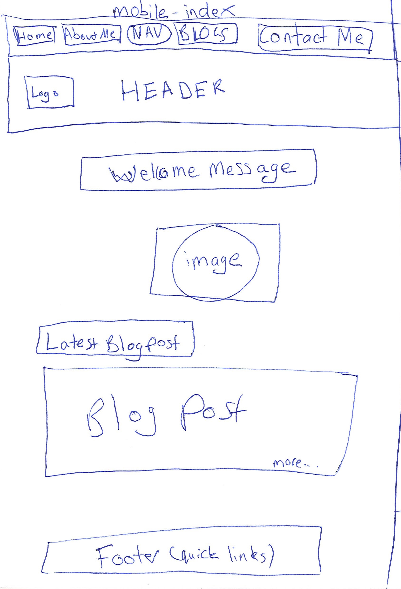
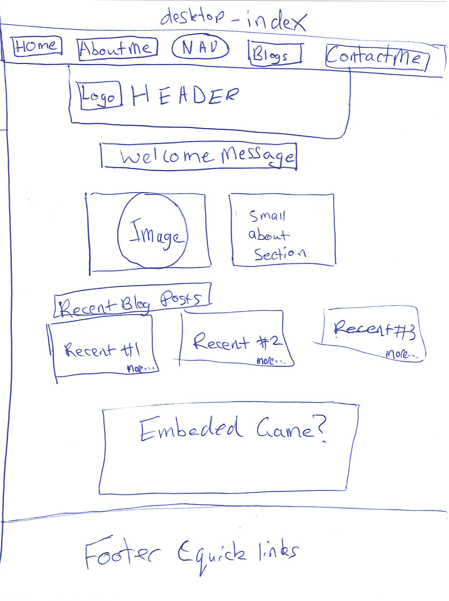
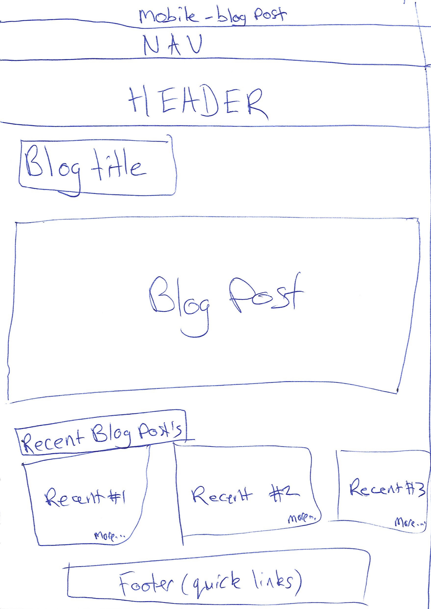
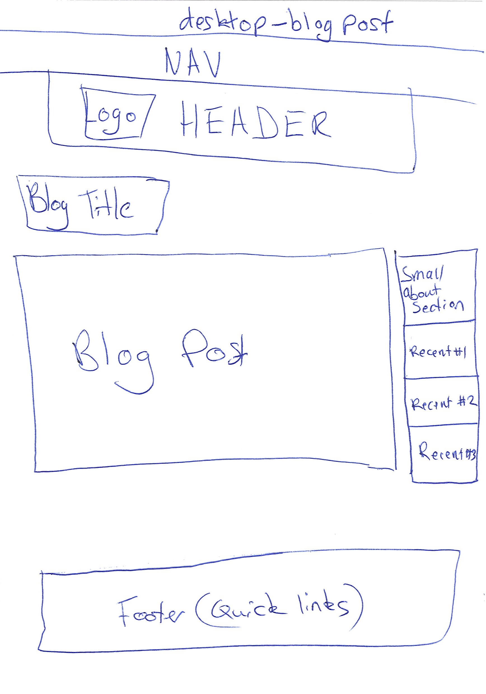

A responsive site is a website that can adapt and look good no matter what device you are using. It is important because you want the content on your site to not only look as good as possible, but for it to be easy for the user to find what they want. On a mobile, a user only requires the core elements and information, compared to a desktop site where more elements can be added because of the screen size.
Mobile first design is when you consider laying out your website for mobile in the first instance and then laying out a desktop version after that. It is important because more and more users are accessing the internet from their phones or tablets, where the screen size is smaller and trying to access a desktop site from a phone is not a pleasant experience. So it is important to design for the smaller screens in the first instance and then add more from there.
Frameworks are pre-made style sheets you can use a base to layout your site. They take out some of the bulk of the work and can let you make something look presentable quickly. They make it easy to make a responsive site, where some of the hard work is already done. The downside is that it can lead to a lot of sites looking similar if you don't add your own custom css, and sometimes does require more fiddling to layout your site at times.
Wireframes are a way to plan and design your site before you start coding it. We use them to be able to layout out each element on the page and start thinking about how it is going to come together. Below you can see my wireframes for this site.
   Click on image for larger size.
When implementing my wireframes, I found that some of what I wanted to do, I did not have the know how to do yet. This meant I had to do some research to see if it was possible or not. I had to compromise on some parts, for example I simplified the drop down blog nav bar in favour of a blog page, as trying to implement changes site wide to the nav bar would be too time consuming. The aspects of my wireframes that I found difficult to implement were mainly the layout of the page and getting the elements to stay where I wanted them to.
{kind=link}
{kind=link}
{kind=link}
{kind=link}